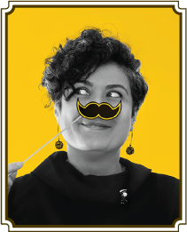

1975, Bornova doğumlu. 1993 yılında Dokuz Eylül Üniversitesi Güzel Sanatlar Fakültesi Grafik Ana Sanat Dalı’nda eğitimine başladı. 1996 yılında henüz öğrenciyken İzmir’de reklam sektöründe başladığı çalışma hayatına, çeşitli ajanslarda grafiker ve sanat yönetmeni olarak devam etti. 2004 yılında İzmir’de Pusula Tanıtım Hizmetleri adıyla kendi ajansını kurdu. 2008 yılında İstanbul’a taşınarak reklamcılık kariyerine burada devam etti. 2014 yılından itibaren Palabıyık Reklam Tesisleri ismini alarak yeniden yapılandırdığı reklam ajansında Ajans Başkanı ve Yaratıcı Yönetmen olarak çalışmalarını sürdürüyor.


1976, Ankara doğumlu. 1999 yılında Koç Üniversitesi Uluslararası İlişkiler Bölümü’nü bitirdi. Çalışma hayatına Pazar Araştırmacısı olarak Piar Gallup (TNS) araştırma şirketinde başladı. Medya ve tüketici araştırmaları konusunda uzmanlaşarak 2002 yılında medya dünyasına adım attı. Hürriyet Gazetesi Reklam Departmanı’nda araştırma ve pazarlama birimlerinde çalışarak Stratejik Planlama Grup Müdürlüğü’ne kadar yükseldi. 2008 - 2014 yılları arasında, Habertürk Gazetesi kurucu ekibinde Reklam Pazarlama Koordinatörü olarak görev aldı. Reklam, pazar araştırma, pazarlama stratejileri, stratejik planlama, marka değeri, marka konumlama ve rekabet analizleri konularında uzmanlaştı. 2016 yılından itibaren Palabıyık Reklam Tesisleri’nde Pazarlama Direktörü olarak çalışmalarını sürdürüyor. İngilizce biliyor.


1974, İstanbul doğumlu. 1998 yılında Mimar Sinan Üniversitesi, Güzel Sanatlar Fakültesi - Grafik Tasarım bölümünden mezun oldu. Henüz öğrenciyken 1997 yılında Communication Arts Group’ta başladığı iş hayatı boyunca Cenajans Grey, Artgrup, Medina Turgul DDB-Grafis, Güzel Sanatlar - Saatchi & Saatchi gibi ajanslarda tasarımcı olarak görev aldı. İllüstrasyon becerisini geliştirmek için karakter tasarımı yapan Ülkütay Design’da (Creative) çalıştı.


1971, Yalova doğumlu. 1994 yılında Boğaziçi Üniversitesi, İngiliz Dili ve Edebiyatı bölümünden mezun oldu. Aynı yıl prodüksiyon asistanlığıyla başladığı iş hayatına 1996 yılından beri reklam yazarı olarak devam ediyor. Bugüne kadar, aralarında Klan / Eurorscg, Medina Turgul DDB-Grafis, TBWA-Tequila, Grey Worldwide - İstanbul, Güzel Sanatlar - Saatchi & Saatchi, Link/Mccann-Erickson bulunan birçok ulusal ve uluslararası ajansta çalıştı. Saab, Citroën, Domino’s Pizza, Kent, Sütaş, SEK, Power Group, Doluca, Knorr, Ülker, Peugeot, Philips, Braun, UNO, 3M, Sabah Gazetesi, Demirbank, Yapı Kredi, Emlak Bankası ve Media Markt gibi farklı sektörlerden müşterilere hizmet verdi. Almanca ve İngilizce biliyor.